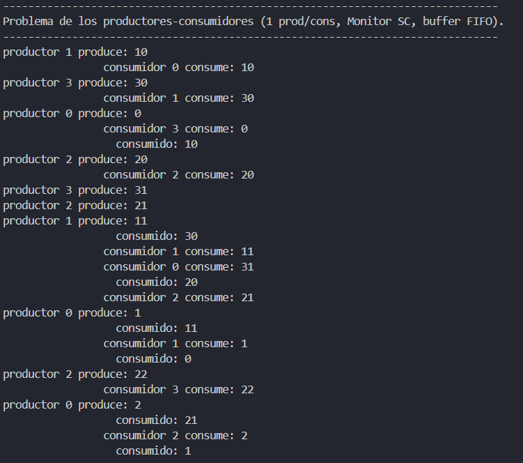
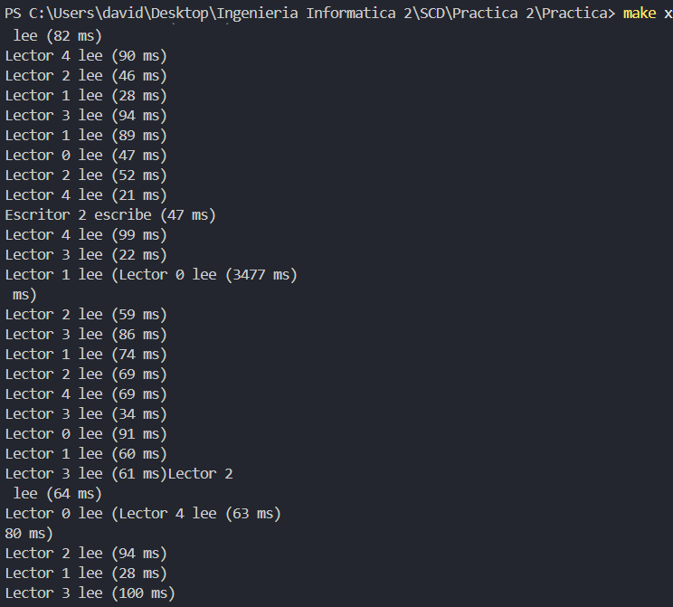

En la documentación de esta práctica veremos una serie de ejercicios.
Veremos sus respectivos códigos y alguna foto de su ejecución.
En esta práctica hemos cambiado los semáforos por monitores, una abrstracción de más alto nivel, que cuenta con algunas ventajas sobre estos, como exclusion mutua automática y variables de condición, y las hebras interactuan mediante estos semáforos.
// -----------------------------------------------------------------------------
//
// Sistemas concurrentes y Distribuidos.
// Seminario 2. Introducción a los monitores en C++11.
//
// archivo: prodcons_1.cpp
// Ejemplo de un monitor en C++11 con semántica SC, para el problema
// del productor/consumidor, con un único productor y un único consumidor.
// Opcion LIFO (stack)
//
// Historial:
// Creado en Julio de 2017
// -----------------------------------------------------------------------------
#include <iostream>
#include <iomanip>
#include <cassert>
#include <thread>
#include <mutex>
#include <condition_variable>
#include <random>
#include "scd.h"
using namespace std ;
using namespace scd ;
constexpr int
num_items = 40 , // número total de items a producir/consumir
num_prod = 4 , // número de hebras productoras
num_cons = 4 ; // número de hebras consumidoras
static_assert( num_items % num_prod == 0, "num_items debe ser múltiplo de num_prod" );
static_assert( num_items % num_cons == 0, "num_items debe ser múltiplo de num_cons" );
constexpr int
items_por_prod = num_items / num_prod ,
items_por_cons = num_items / num_cons ;
mutex
mtx ; // mutex de escritura en pantalla
unsigned
cont_prod[num_items], // contadores de verificación: producidos
cont_cons[num_items], // contadores de verificación: consumidos
producidos[num_prod]; // Nº de items producidos por cada productor
//**********************************************************************
// funciones comunes a las dos soluciones (fifo y lifo)
//----------------------------------------------------------------------
int producir_dato( int i_prod )
{
this_thread::sleep_for( chrono::milliseconds( aleatorio<20,100>() ));
const int valor = i_prod * items_por_prod + producidos[i_prod] ;
producidos[i_prod]++ ;
mtx.lock();
cout << "productor " << i_prod
<< " produce: " << valor << endl << flush ;
mtx.unlock();
cont_prod[valor] ++ ;
return valor ;
}
//----------------------------------------------------------------------
void consumir_dato( unsigned dato )
{
if ( num_items <= dato )
{
cout << " dato === " << dato << ", num_items == " << num_items << endl ;
assert( dato < num_items );
}
cont_cons[dato] ++ ;
this_thread::sleep_for( chrono::milliseconds( aleatorio<20,100>() ));
mtx.lock();
cout << " consumido: " << dato << endl ;
mtx.unlock();
}
//----------------------------------------------------------------------
void ini_contadores()
{
for( unsigned i = 0 ; i < num_items ; i++ )
{ cont_prod[i] = 0 ;
cont_cons[i] = 0 ;
}
}
//----------------------------------------------------------------------
void test_contadores()
{
bool ok = true ;
cout << "comprobando contadores ...." << flush ;
for( unsigned i = 0 ; i < num_items ; i++ )
{
if ( cont_prod[i] != 1 )
{
cout << "error: valor " << i << " producido " << cont_prod[i] << " veces." << endl ;
ok = false ;
}
if ( cont_cons[i] != 1 )
{
cout << "error: valor " << i << " consumido " << cont_cons[i] << " veces" << endl ;
ok = false ;
}
}
if (ok)
cout << endl << flush << "solución (aparentemente) correcta." << endl << flush ;
}
// *****************************************************************************
// clase para monitor buffer, version LIFO, semántica SC, un prod. y un cons.
class ProdCons1SC
{
private:
static const int // constantes:
num_celdas_total = 10; // núm. de entradas del buffer
int // variables permanentes
buffer[num_celdas_total],// buffer de tamaño fijo, con los datos
primera_libre ; // indice de celda de la próxima inserción
mutex
cerrojo_monitor ; // cerrojo del monitor
condition_variable // colas condicion:
ocupadas, // cola donde espera el consumidor (n>0)
libres ; // cola donde espera el productor (n<num_celdas_total)
public: // constructor y métodos públicos
ProdCons1SC( ) ; // constructor
int leer(); // extraer un valor (sentencia L) (consumidor)
void escribir( int valor ); // insertar un valor (sentencia E) (productor)
} ;
// -----------------------------------------------------------------------------
ProdCons1SC::ProdCons1SC( )
{
primera_libre = 0 ;
}
// -----------------------------------------------------------------------------
// función llamada por el consumidor para extraer un dato
int ProdCons1SC::leer( )
{
// ganar la exclusión mutua del monitor con una guarda
unique_lock<mutex> guarda( cerrojo_monitor );
// esperar bloqueado hasta que 0 < num_celdas_ocupadas
if ( primera_libre == 0 )
ocupadas.wait( guarda );
// hacer la operación de lectura, actualizando estado del monitor
assert( 0 < primera_libre );
primera_libre-- ;
const int valor = buffer[primera_libre] ;
// señalar al productor que hay un hueco libre, por si está esperando
libres.notify_one();
// devolver valor
return valor ;
}
// -----------------------------------------------------------------------------
void ProdCons1SC::escribir( int valor )
{
// ganar la exclusión mutua del monitor con una guarda
unique_lock<mutex> guarda( cerrojo_monitor );
// esperar bloqueado hasta que num_celdas_ocupadas < num_celdas_total
if ( primera_libre == num_celdas_total )
libres.wait( guarda );
//cout << "escribir: ocup == " << num_celdas_ocupadas << ", total == " << num_celdas_total << endl ;
assert( primera_libre < num_celdas_total );
// hacer la operación de inserción, actualizando estado del monitor
buffer[primera_libre] = valor ;
primera_libre++ ;
// señalar al consumidor que ya hay una celda ocupada (por si esta esperando)
ocupadas.notify_one();
}
// *****************************************************************************
// funciones de hebras
void funcion_hebra_productora( ProdCons1SC * monitor, int i_prod )
{
for( int k = 0 ; k < items_por_prod ; k++ )
{
int valor = producir_dato( i_prod );
monitor->escribir( valor );
}
}
// -----------------------------------------------------------------------------
void funcion_hebra_consumidora( ProdCons1SC * monitor, int i_cons )
{
for( int k = 0 ; k < items_por_cons ; k++ )
{
int valor = monitor->leer();
mtx.lock();
cout << " consumidor " << i_cons
<< " consume: " << valor << endl ;
mtx.unlock();
consumir_dato( valor ) ;
}
}
// -----------------------------------------------------------------------------
int main()
{
cout << "-------------------------------------------------------------------------------" << endl
<< "Problema de los productores-consumidores (1 prod/cons, Monitor SC, buffer FIFO). " << endl
<< "-------------------------------------------------------------------------------" << endl
<< flush ;
ProdCons1SC monitor ;
ini_contadores();
thread productores[num_prod];
thread consumidores[num_cons];
// lanzar productores
for( int i = 0 ; i < num_prod ; i++ )
productores[i] = thread( funcion_hebra_productora, &monitor, i );
// lanzar consumidores
for( int i = 0 ; i < num_cons ; i++ )
consumidores[i] = thread( funcion_hebra_consumidora, &monitor, i );
// esperar a que terminen todos
for( int i = 0 ; i < num_prod ; i++ )
productores[i].join();
for( int i = 0 ; i < num_cons ; i++ )
consumidores[i].join();
test_contadores();
}

#include <iostream>
#include <cassert>
#include <thread>
#include <mutex>
#include <random> // dispositivos, generadores y distribuciones aleatorias
#include <chrono> // duraciones (duration), unidades de tiempo
#include "scd.h"
using namespace std ;
using namespace scd ;
// número de fumadores
const int num_fumadores = 3 ;
class Estanco : public HoareMonitor{
private:
int mostrador;
CondVar mostrador_vacio;
CondVar ingr_disp[num_fumadores];
public:
Estanco();
void ponerIngrediente(int i);
void esperarRecogidaIngrediente();
void obtenerIngrediente(int i);
};
void Estanco::ponerIngrediente(int i){
while (mostrador != -1)
mostrador_vacio.wait();
mostrador = i;
cout << "Estanquero : pone ingrediente " << i << endl;
ingr_disp[i].signal();
}
void Estanco::esperarRecogidaIngrediente(){
while (mostrador != -1)
mostrador_vacio.wait();
}
void Estanco::obtenerIngrediente(int i){
while (mostrador != i)
ingr_disp[i].wait();
assert(mostrador == i);
cout << "Fumador " << i << " : retira su ingrediente" << endl;
mostrador = -1;
mostrador_vacio.signal();
}
Estanco::Estanco(){
mostrador = -1;
mostrador_vacio = newCondVar();
for (int i = 0; i < num_fumadores; i++)
ingr_disp[i] = newCondVar();
}
//-------------------------------------------------------------------------
// Función que simula la acción de producir un ingrediente, como un retardo
// aleatorio de la hebra (devuelve número de ingrediente producido)
int producir_ingrediente()
{
// calcular milisegundos aleatorios de duración de la acción de fumar)
chrono::milliseconds duracion_produ( aleatorio<10,100>() );
// informa de que comienza a producir
cout << "Estanquero : empieza a producir ingrediente (" << duracion_produ.count() << " milisegundos)" << endl;
// espera bloqueada un tiempo igual a ''duracion_produ' milisegundos
this_thread::sleep_for( duracion_produ );
const int num_ingrediente = aleatorio<0,num_fumadores-1>() ;
// informa de que ha terminado de producir
cout << "Estanquero : termina de producir ingrediente " << num_ingrediente << endl;
return num_ingrediente ;
}
//----------------------------------------------------------------------
// función que ejecuta la hebra del estanquero
void funcion_hebra_estanquero( MRef<Estanco> monitor )
{
while ( true )
{
const int i = producir_ingrediente();
monitor->ponerIngrediente( i );
monitor->esperarRecogidaIngrediente();
}
}
//-------------------------------------------------------------------------
// Función que simula la acción de fumar, como un retardo aleatoria de la hebra
void fumar( int num_fumador )
{
// calcular milisegundos aleatorios de duración de la acción de fumar)
chrono::milliseconds duracion_fumar( aleatorio<20,200>() );
// informa de que comienza a fumar
cout << "Fumador " << num_fumador << " :"
<< " empieza a fumar (" << duracion_fumar.count() << " milisegundos)" << endl;
// espera bloqueada un tiempo igual a ''duracion_fumar' milisegundos
this_thread::sleep_for( duracion_fumar );
// informa de que ha terminado de fumar
cout << "Fumador " << num_fumador << " : termina de fumar, comienza espera de ingrediente." << endl;
}
//----------------------------------------------------------------------
// función que ejecuta la hebra del fumador
void funcion_hebra_fumador( MRef<Estanco> monitor, int num_fumador )
{
while( true )
{
monitor->obtenerIngrediente( num_fumador );
fumar( num_fumador );
}
}
//----------------------------------------------------------------------
int main()
{
cout << "---------------------------------------------\n"
<< "Problema de los fumadores (SCD, monitor SU)\n"
<< "---------------------------------------------\n" << flush;
MRef<Estanco> estanco = Create<Estanco>();
thread hebra_estanquero( funcion_hebra_estanquero, estanco );
thread hebra_fumadores[num_fumadores];
for (int i = 0; i < num_fumadores; i++)
hebra_fumadores[i] = thread( funcion_hebra_fumador, estanco, i );
hebra_estanquero.join();
for (int i = 0; i < num_fumadores; i++)
hebra_fumadores[i].join();
return 0;
}
#include <iostream>
#include <cassert>
#include <thread>
#include <mutex>
#include <random> // dispositivos, generadores y distribuciones aleatorias
#include <chrono> // duraciones (duration), unidades de tiempo
#include "scd.h"
using namespace std ;
using namespace scd ;
// número de hebras lectoras y escritoras
const int num_lectores = 5 ;
const int num_escritores = 3 ;
/* Funcion para generar tiempo aleatorio */
template<int min, int max> int aleatorio_tiempo() {
static default_random_engine gen( (random_device())() );
static uniform_int_distribution<int> dist(min, max);
return dist(gen);
}
class Lec_Esc : public HoareMonitor{
private:
int n_lec; // número de lectores leyendo
bool escrib; // true si hay un escritor escribiendo
CondVar lectura; // cola de lectores
CondVar escritura; // cola de escritores
public:
Lec_Esc(); // constructor
void ini_lectura(); // inicio de sección de lectura
void fin_lectura(); // fin de sección de lectura
void ini_escritura(); // inicio de sección de escritura
void fin_escritura(); // fin de sección de escritura
};
Lec_Esc::Lec_Esc()
{
n_lec = 0;
escrib = false;
lectura = newCondVar();
escritura = newCondVar();
}
void Lec_Esc::ini_lectura()
{
// si hay un escritor escribiendo, esperar
if (escrib)
lectura.wait();
// aumentar número de lectores
n_lec++;
// permitir que más lectores entren en cadena
lectura.signal();
}
void Lec_Esc::fin_lectura()
{
n_lec--;
// si ya no quedan lectores, un escritor puede entrar
if (n_lec == 0)
escritura.signal();
}
void Lec_Esc::ini_escritura()
{
// si hay lectores leyendo o un escritor escribiendo, esperar
if (n_lec > 0 || escrib)
escritura.wait();
escrib = true; // un escritor entra
}
void Lec_Esc::fin_escritura()
{
escrib = false;
// si hay lectores esperando, dales prioridad
if (!lectura.empty())
lectura.signal();
else
escritura.signal();
}
void leer(int i)
{
chrono::milliseconds dur( aleatorio_tiempo<20,100>() );
cout << "Lector " << i << " lee (" << dur.count() << " ms)" << endl;
this_thread::sleep_for(dur);
}
void escribir(int i)
{
chrono::milliseconds dur( aleatorio_tiempo<20,100>() );
cout << "Escritor " << i << " escribe (" << dur.count() << " ms)" << endl;
this_thread::sleep_for(dur);
}
void funcion_hebra_lectora(MRef<Lec_Esc> monitor, int i)
{
while (true)
{
monitor->ini_lectura();
leer(i);
monitor->fin_lectura();
// pequeño descanso aleatorio fuera del monitor
this_thread::sleep_for( chrono::milliseconds( aleatorio_tiempo<20,100>() ) );
}
}
void funcion_hebra_escritora(MRef<Lec_Esc> monitor, int i)
{
while (true)
{
monitor->ini_escritura();
escribir(i);
monitor->fin_escritura();
this_thread::sleep_for( chrono::milliseconds( aleatorio_tiempo<20,100>() ) );
}
}
int main(){
cout << "---------------------------------------------\n"
<< "Problema de Lectores-Escritores (Monitor SU)\n"
<< "---------------------------------------------\n" << flush;
MRef<Lec_Esc> monitor = Create<Lec_Esc>();
thread lectores[num_lectores];
thread escritores[num_escritores];
for(int i=0; i<num_lectores; i++)
lectores[i] = thread(funcion_hebra_lectora, monitor, i);
for(int i=0; i<num_escritores; i++)
escritores[i] = thread(funcion_hebra_escritora, monitor, i);
for(int i=0; i<num_lectores; i++)
lectores[i].join();
for(int i=0; i<num_escritores; i++)
escritores[i].join();
return 0;
}
